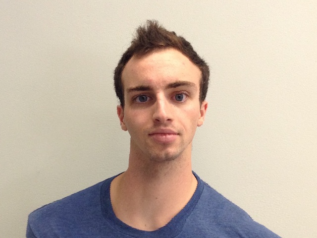

Face morphing is an art form that encompasses many processes. It includes the techniques of seamlessly blending from one face to another, combining multiple faces into a fusion, and extrapolating from various facial averages in order to produce caricature-like results.
The first part of the project was creating a morph animation from my face into someone else's. I chose to morph into Captain America. To do this, I had to manually label the same points on each of our faces in order to define correspondences. I then take a weighted average of these two sets of points; the weights in the average depends on the desired warp ratio for the combination of the two images. This serves as the image template for warping. I then calculated the Delaunay triangulation between all the averaged points. I chose Delaunay because it maximizes the smallest angles in the triangulation. I used this triangulation to calculate the affine transformation from the morph template to each of the source images. Solving for the affine transformations was simple linear algebra using the vertices of each of the triangles in the combined image triangulation and the corresponding points in the source images. It follows the following formula of Ax = b.
In this case A is the 3x3 matrix containing the vertices of a given triangle in the combined image triangulation (it has an extra column of ones to account for translation). x is the 3x2 affine transformation and b is 3x2 matrix of the corresponding points in the source image. The goal is to solve for the affine transform for all the pixels in this triangle, which can be done by solving for x with an off-the-shelf linear algebra solver. Once this is done for all of the triangles in the combined image (and both source images), you can simply go pixel by pixel through the combined image, and set its value to the weighted average of the corresponding pixels in the source images. These corresponding pixels are found by multiplying the affine transforms for the appropriate triangle in the combined image, then interpolating. I used simple rounding to the nearest pixel in the source images as my interpolation technique and got pretty good results (so I did not bother to include more difficult interpolation techniques). Do this for every pixel in the combined image to create the result. In order to create a combined image that is half one of the source images and half of the other, just set the warp fraction and dissolve fraction to .5, which turns the weighted averages into simple averages. To create a morph animation, I simply created many morphed images, while varying the warp and dissolve fractions of each one from 1 to 0 and stringing these resultant images together. Visual examples of this technique are found below, as well as a 50-50 combined image, and the final morph animation.
|
Above is an image that shows the selected points used as correspondences in red. It also includes the Delaunay triangulation. This is just for visual reference (it helps to see it directly on one face), because in the algorithm, the Delaunay triangulation is used on the weighted average of the two image correspondece shapes, not each correspondence shape individually. Below you can see the 50-50 morph of Captain Andrew, and below that is the morph animation from myself into Captain America and vice versa.

The second part of this project involved computing the mean face given a dataset of annotated faces. I used the Danish dataset from here http://www2.imm.dtu.dk/~aam/datasets/datasets.html . In order to compute the average face, one must first compute the average face shape, and then morph each face to that shape and average them all. I computed the average face shape by first parsing the point correspondences from the Danish dataset and averaging each point. I then morphed every Danish face into the average shape (which is done by using a warp fraction of 1 and dissolve fraction of 0). I then computed the average Danish face simply by taking the average of all of these morphed Danish faces. Finally, I extrapolated from the mean Danish face to create a caracature of my own.
Below you can see the morph of a random Dane into the average shape, and the average Danish face. I also computed the average male and female Danish faces by doing this same process with the gender-specific sub-populations. In the results section, you can also see my face warped into the average Danish face shape, and the average Danish face warped into my face shape. The final image is the characature of my own face extrapolated from the mean.
 |
|
| Original Dane | Dane morphed to average Dane shape |
| Average Male Dane | Average Dane | Average Female Dane |
| Dane shaped Andrew | Andrew shaped average Dane |
|  | |
| Original Andrew | Caricature Andrew |
I attempted to make my face look more female. To do this, I used the average Danish face and average female Danish face already calculated in the previous part. I found the feminine shape vector by subtracting the correspondence points of the average female from the same points in the average. I then morphed my own face into a new shape that was the original shape plus a step in the direction of the feminine shape vector. I also found female colorization by subtracting the average image from the female average image once they were aligned to be the same shape (in this case, the shape of my own face). I then added some of this female colorization into my own face. I then made myself look more feminine by doing both of these techniques together.
Below you can see the results of my attempted feminization. As an analysis, I believe I would have received better results if I had compared the man mean to the female mean instead of the absolute mean to the female mean. I also think it would have improved if I had used a larger average dataset instead of continuing to use the Danish one. Finally, the last thing I could have done to improve it would have been to include more correspondence points.
| Andrew | Female Colored Andrew |
| Female Shaped Andrew | Female Colored and Shaped Andrew |
I made a music video of a chain of face morphs using pictures taken by Martin Schoeller. It can be viewed at the following link:
https://www.youtube.com/watch?v=7w1QGby_KYsWe all collaborated and aligned our images the same way and made sure they had the same dimensions. Then we shared our images with each other and determined an order. Each person morphed from him/herself into the next person. I then compiled everybodys sequences of jpg files and turned them into a music video. You can view that video here.